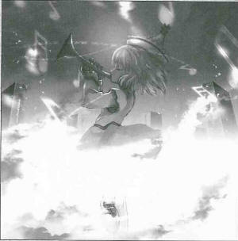
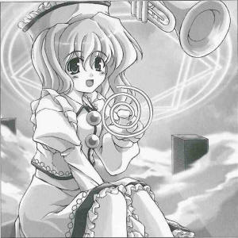

Is the Middle Prismriver Sister Going Solo?
At the Hill of the Ghosts of Suicide VictimsThis article is about the recent actions of the Prismriver Sister's middle sister, Merlin Prismriver (poltergeist).
She plays the trumpet in their ensemble, but she feels that it's time to separate from the group.
There are places, graveyards in particular, from where many ghosts can be summoned. This time I went to get total coverage on this issue.
She went by herself to a graveyard and gave a refined trumpet performance.
The ghosts had been in the graveyard for many nights.
These ghosts also had different personalities.
Among these were people who had died holding on to grudges and regrets.
She went to perform by herself multiple times, especially for those who died by committing suicide.
Unlike a number of times performing with her sisters, her performance used sounds with a rich expression.
The mood was much lighter than the ghosts expected it to be, and it ran throughout the graveyard.
It seemed as if her trumpet were controlling the ghosts, rallying them like an army.
I asked her for the reason behind her actions.
Even though the three of us play violin, trumpet, and keyboard, the sound of each instrument has a different part. With my older sister's gentle songs, the listener's mood is calmed from the sounds of depression. My intense songs can transform feelings, and the listener's mood is uplifted from the sounds of mania. Lyrica brings those two ends together into an ear-achingly good song with the sound of illusion. If one of these elements are lacking, then the music would run wild, as if it were magic. On the other hand, for these ghosts of people who commited suicide, driving them crazy in a good way helps them out, so I'm the only one who needs to perform. If we were dealing with insane people, my older sister would be a good choice, and while Lyrica wouldn't be particularly effective, there shouldn't be a problem... so basically any one person doing whatever they want is fine, yeah?
It seems there is no difference in sound between the music and the performer in this case.
It is surprising there are those who understand how to use music to change the condition of those who listen to these sounds.
Certainly, when it is needed, the rich expressions of her solo trumpet performance can change the mood so quickly, it is impossible to listen to it calmly.
This time, while I was listening to her performance for collecting data, my mood improved so much I almost turned over a tombstone.
For normal people suddenly encountering these three girls performing together, not listening may possibly be the best idea.
 Merlin
Saying people shouldn't listen to our performance is so mean!
Aya
But my intended meaning was that there was too much danger. Even someone as calm and collected as myself got carried high and away listening to you.
Merlin
Your intended meaning was mute; you absolutely didn't say they were good sounds. I have no interest in sounds that don't stir the heart. My sounds are emotional sounds in the first place, and the spinning of my trumpet is like an amplifier for those emotions.
Aya
So it spins, huh? Just like you.
Merlin
How rude. I don't go that far, but I try to enjoy everyday a little bit.
Aya
Sounds like fun. So this is just another extension of your sister's normal actions.
Merlin
Normally we're a lot noisier. While it does get loud whenever there are three girls together, it's not because we're talking, but because we're practicing. Whoever is the loudest wins! Isn't it amazing how we all think like that? Don't just take my word for it.
Aya
You say wins, so your normal lifestyle is always a matter of winning and losing?
Merlin
That's one problem with our moods, I guess.
Aya
So your older sister loses the most? That's what I think, but she is the most mature out of you all.
Merlin
When my older sister gets loud, she REALLY gets loud. Her noisiness level is quite high, around the level of breaking glass.
Aya
As expected of a poltergeist. By the way, about the article on your solo performance, did the ghosts of
those who committed suicide all go to the next world?
Merlin
Maybe they did, maybe they didn't. I don't know if they were set free from whatever caused them to kill themselves.
Aya
Maybe that's what happened.
Merlin
I didn't really perform to lead dead spirits into the next world. It was only to give ghosts who still had lingering attachments to this world a little bit of fun. I thought it would be a good idea to let forget their all-too-short life with some exciting songs. But to say one more thing, it was my sisters who told me to do it.
Aya
Your sisters must really enjoy live performances to be planning them so often.
Merlin
Well, it was because I lost to my sister before.
Aya
So winning and losing has nothing to do with your mood.
Merlin
I was only kidding!
Aya
Now that I think of it, during your solo performance, I wasn't expecting you to perform with instruments besides the trumpet. Why did you play other instruments?
Merlin
If I only play the trumpet, I'm limited to playing the melody. Being able to play as many instruments as I want to as the same time sure is handy. I played the trombone, which spun less than the trumpet, the tuba, which spun more than the trumpet, and the horn, which spun much more than the trumpet. And there were many others too.
Aya
Your instruments set the standard for spinning, huh?
Merlin
When I think about getting others excited, I try to play just enough to do that. That's why I play spinning instruments.
Aya
I think that when you perform, you yourself spin just as much.
Merlin
It's exciting, right?
Aya
Yes, exciting enough for me.
Profile:
Merlin Prismriver
Lunasa's younger sister, so she's also a poltergeist.
She is good with wind instruments and especially favors the trumpet.
Appearances:
Perfect Cherry Blossom, Phantasmagoria of Flower View